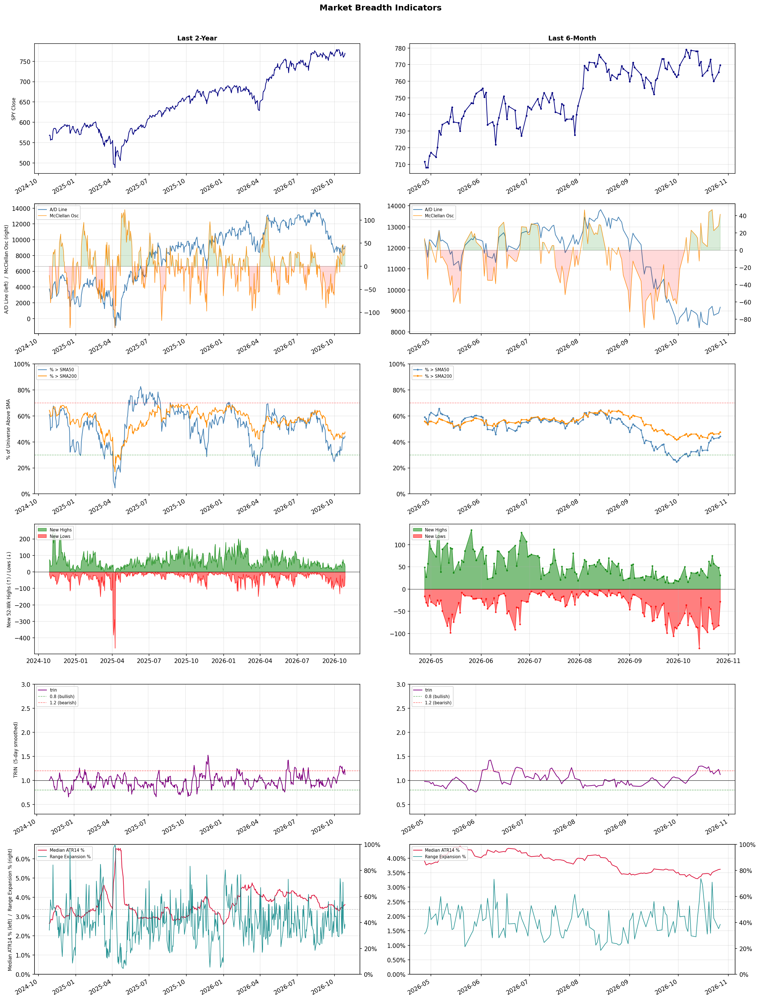

A daily market breadth and sector rotation report for active investors
| Item | Read |
|---|---|
| Regime | Defensive |
| Risk posture | Defensive |
| Universe | 1,315 stocks tracked · 31 new 52-week highs · 30 active swing setups |
| Breadth | only 44.3% of tracked stocks are above SMA50, new highs exceed new lows (31 vs 28) |
| Leadership | Oil & Gas E&P, REIT - Hotel & Motel, and Oil & Gas Integrated |
| Weakest groups | Uranium, Electrical Equipment & Parts, and Other Industrial Metals & Mining |
Use this report to prioritize research and chart review; validate entries, stops, liquidity, earnings, and risk before acting.
| Item | Read |
|---|---|
| Primary read | Defensive regime with Defensive risk posture. |
| Research queue | RRC, NOG, BTE, AR, CNX |
| Leadership focus | Oil & Gas E&P, REIT - Hotel & Motel, and Oil & Gas Integrated |
| Caution list | Uranium, Electrical Equipment & Parts, and Other Industrial Metals & Mining |
| Review prompt | Check extension risk, chart location, fundamentals, valuation, and earnings before using any research row. |
| Item | Read |
|---|---|
| Primary read | 1 active risk warnings; use screen output as watchlist input only. |
| Bullish screens | RRC, APLE, DRH, PEB, TXNM |
| Bearish screens | UBER, KEP, IQ, NFLX, BKNG |
| Alerts / levels | Automated trigger, stop, ATR, liquidity, reward/risk, and event-risk levels are pending future enrichment. |
| Review prompt | Open the linked chart, define trigger and invalidation, then check liquidity and event risk independently. |
Risk Posture: Defensive — screen backdrop favors caution; require independent risk review before new exposure
Metric context: McClellan below -50 = elevated selling pressure; below -100 = washout territory. Range Expansion = share of stocks with daily range above their 20-day average. Signal Density = share of tracked names appearing in signal screens.
| Breadth Date | % > SMA50 | % > SMA200 | New Highs | New Lows | McClellan | Median Range | Avg Range | Median ATR14 | Range Expansion | Signal Density |
|---|---|---|---|---|---|---|---|---|---|---|
| 2026-10-27 | 44.3% | 47.6% | 31 | 28 | 41.5 | 2.9% | 3.7% | 3.6% | 38.5% | 12.4% |

Prior comparison date: October 26, 2026
| Metric | Prior | Current | Change |
|---|---|---|---|
| Regime | Defensive | Defensive | unchanged |
| Risk Posture | Defensive | Defensive | unchanged |
| % > SMA50 | 43.2% | 44.3% | +1.2 pts |
| % > SMA200 | 46.3% | 47.6% | +1.3 pts |
| New Highs | 48 | 31 | -17 |
| New Lows | 82 | 28 | +54 |
Top-10 industries entering: Apparel Manufacturing and Healthcare Plans. Top-10 industries leaving: Financial Data & Stock Exchanges and Oil & Gas Refining & Marketing. New multi-signal long setups: ANF, APLE, CAI, DRH, HNGE, PEB. New multi-signal short setups: BILI, BKNG, IQ, NFLX.
| Status | Tickers | Read |
|---|---|---|
| Added | ACHC, ANF, APLE, BILI, BKNG, CAI, CRGY, DRH | New technical screen matches vs prior report. |
| Removed | AMH, APLD, AVPT, BOX, CART, CBRE, CIFR, COLB | No longer present in today's technical screen matches. |
| Still Active | FLG, FTV, HALO, HAS, KEP, NTSK, RPRX | Appeared in both current and prior reports. |
| Promoted | none | Model Screen Score improved by at least 15 points. |
| Downgraded | none | Model Screen Score declined by at least 15 points. |
| Direction | Industry | ETF | Prior Rank | Current Rank | Days | Rank Change |
|---|---|---|---|---|---|---|
| Rose | Apparel Manufacturing | N/A | 78 | 7 | 42 | +71 |
| Rose | Building Products & Equipment | XHB | 84 | 26 | 42 | +58 |
| Rose | REIT - Hotel & Motel | XLRE | 60 | 2 | 35 | +58 |
| Rose | Rental & Leasing Services | N/A | 75 | 21 | 42 | +54 |
| Rose | Restaurants | N/A | 81 | 27 | 35 | +54 |
Bull: The Apparel Manufacturing sector is experiencing rising relative strength primarily due to favorable industry trends driven by shifting trade dynamics and sourcing strategies, as highlighted in recent headlines. The anticipated recovery of textile stocks, particularly fueled by new trade deals and a shift away from reliance on China for sourcing, positions the sector for growth, as noted in The Economic Times. Additionally, analysts from Yahoo Finance and Forbes are identifying specific stocks poised for gains, further indicating investor confidence in the sector's potential for robust performance through 2026.
Bear: While recent headlines suggest optimism for the Apparel Manufacturing sector due to shifting trade dynamics and sourcing strategies, these trends may not translate into sustained growth. The sector faces significant headwinds, including rising labor costs, supply chain disruptions, and increasing competition from fast fashion and sustainable brands, which could undermine profitability. Furthermore, the anticipated recovery may be overly reliant on external factors that are subject to geopolitical uncertainties, making long-term investment in this sector risky.
Verdict: The Apparel Manufacturing sector's rising relative strength is primarily driven by favorable trade dynamics and a strategic shift away from reliance on China for sourcing, positioning it for growth through 2026. However, investors should remain cautious of significant risks, including rising labor costs and supply chain disruptions, which could undermine profitability and create volatility in the sector. It is advisable to closely monitor geopolitical developments and competitive pressures from fast fashion and sustainable brands before making investment decisions.
Sources: Google News
Bull: The Building Products & Equipment sector is likely experiencing a rise in relative strength due to robust demand for construction stocks, as highlighted by recent headlines discussing potential surprises in earnings for key players in the industry. Factors such as increased infrastructure spending, a strong housing market, and ongoing investments in energy-efficient technologies—evident in mentions of companies like Johnson Controls and Aaon—are driving optimism and investor interest, positioning the sector favorably for growth in the coming years.
Bear: While the recent headlines may suggest optimism in the Building Products & Equipment sector, several headwinds could undermine this bullish outlook. Rising interest rates are likely to dampen housing demand and construction activity, leading to potential earnings disappointments, particularly for companies heavily reliant on residential projects. Additionally, supply chain disruptions and inflationary pressures could erode profit margins, making it difficult for companies to capitalize on any perceived growth opportunities.
Verdict: The Building Products & Equipment sector is likely experiencing a rise due to strong demand driven by increased infrastructure spending, a robust housing market, and investments in energy-efficient technologies. However, the key risk lies in rising interest rates, which could dampen housing demand and construction activity, potentially leading to earnings disappointments for companies reliant on residential projects. Investors should monitor interest rate trends closely while considering opportunities in companies that are well-positioned to navigate these challenges.
Sources: Google News
Bull: The rising relative strength of the Hotel & Motel REIT sector can be attributed to a robust recovery in travel demand and positive earnings reports, as highlighted by Seeking Alpha's focus on Host Hotels & Resorts during this earnings season. Additionally, the favorable outlook from analysts, as seen in articles from Morningstar and The Motley Fool, suggests that strong fundamentals and increasing occupancy rates are driving investor confidence in hospitality REITs, positioning them well for growth through 2026. This trend is further supported by the overall outperformance of real estate stocks, indicating a broader recovery in the real estate market.
Bear: While the rising relative strength of the Hotel & Motel REIT sector may appear promising, it is crucial to consider the potential headwinds that could undermine this growth. The hospitality industry remains vulnerable to economic fluctuations, including rising interest rates and inflation, which can dampen consumer spending on travel and leisure. Additionally, the ongoing uncertainty surrounding global events, such as geopolitical tensions and potential new COVID-19 variants, could disrupt travel demand and occupancy rates, challenging the optimistic outlook presented by bullish analysts.
Verdict: The Hotel & Motel REIT sector is experiencing a robust recovery driven by strong travel demand and positive earnings reports, indicating a rebound in occupancy rates and investor confidence. However, key risks such as rising interest rates, inflation, and potential disruptions from geopolitical tensions or new COVID-19 variants could undermine this growth trajectory, warranting caution for investors. It is essential to monitor these macroeconomic factors closely while considering investments in this sector.
Sources: Google News
Bull: The Rental & Leasing Services industry is experiencing a rise in relative strength due to increased demand for flexible asset utilization amid economic uncertainty, as highlighted by the positive sentiment surrounding data center stocks and REITs in recent headlines. The growing emphasis on digital infrastructure, as seen in the U.S. News article on data center investments, coupled with the resilience of commercial real estate, suggests that companies in the rental and leasing space are well-positioned to capitalize on the evolving needs of businesses for adaptable solutions. This trend is further supported by the recognition of top-performing stocks in the sector, indicating strong investor interest and potential for growth.
Bear: While the bull thesis highlights increased demand for flexible asset utilization, it overlooks the potential headwinds posed by rising interest rates and inflation, which can significantly impact the cost of financing and reduce profit margins for rental and leasing companies. Additionally, the focus on digital infrastructure and data centers may lead to overcapacity in certain segments, causing pricing pressures and diminishing returns for firms that are unable to adapt quickly to changing market dynamics. As a result, the current relative strength may not be sustainable if economic conditions worsen or if competition intensifies.
Verdict: The Rental & Leasing Services industry is likely rising due to heightened demand for flexible asset utilization driven by economic uncertainty and a robust focus on digital infrastructure, particularly in data centers. However, key risks include the potential impact of rising interest rates and inflation, which could squeeze profit margins and lead to overcapacity in certain segments, necessitating a cautious approach to investment in this sector. Investors should closely monitor economic indicators and competitive dynamics to gauge the sustainability of this growth trend.
Sources: Google News
Bull: The restaurant industry is experiencing rising relative strength due to steady growth in consumer dining frequency, as highlighted by Brinker and Yum China's strong performance amid a broader market context. Positive sentiment is further supported by analyst recommendations to buy stocks in the sector, indicating confidence in continued resilience and recovery, despite some short-term volatility seen in major players like Chipotle and McDonald's. This suggests that the overall fundamentals of the restaurant sector remain robust, making it an attractive investment opportunity.
Bear: While the relative strength of the restaurant industry may appear promising, the recent decline in dining frequency and the underperformance of key players like Chipotle and McDonald's signal deeper issues, such as rising inflation and changing consumer habits that could dampen discretionary spending. Furthermore, the positive sentiment from analysts may not fully account for potential economic headwinds, including labor shortages and supply chain disruptions, which could hinder profitability and growth in the sector. Thus, the apparent resilience may be more fragile than it seems, warranting a cautious approach to investment in restaurant stocks.
Verdict: The restaurant industry's rising strength is primarily driven by increasing consumer dining frequency, as evidenced by the strong performances of companies like Brinker and Yum China, which reflect a broader recovery trend. However, investors should remain cautious due to potential risks from rising inflation, changing consumer habits, and operational challenges like labor shortages and supply chain disruptions that could impact profitability. It is advisable to monitor these economic factors closely when considering investments in restaurant stocks.
Sources: Google News
| Direction | Industry | ETF | Prior Rank | Current Rank | Days | Rank Change |
|---|---|---|---|---|---|---|
| Fell | Semiconductor Equipment & Materials | SOXX | 4 | 76 | 28 | -72 |
| Fell | Capital Markets | KCE | 9 | 79 | 35 | -70 |
| Fell | Agricultural Inputs | N/A | 6 | 71 | 42 | -65 |
| Fell | Electronic Components | XLK | 8 | 73 | 28 | -65 |
| Fell | Copper | COPX | 3 | 62 | 14 | -59 |
Bear: While Jefferies may project growth through 2028, the current market dynamics suggest that the semiconductor sector is facing significant headwinds, including overvaluation concerns and a potential 15% decline as indicated by Morgan Stanley. The recent volatility in AI stocks, which are crucial for semiconductor demand, raises questions about the sustainability of growth in this sector, especially as key players like Applied Materials (AMAT) experience selloffs. This environment of uncertainty and declining relative strength indicates that the risks may outweigh the potential for recovery, making it a challenging time to invest in semiconductor stocks.
Bull: The Semiconductor Equipment & Materials sector is experiencing a decline in relative strength primarily due to concerns about overvaluation and potential market corrections, as highlighted by Morgan Stanley's warning of a possible 15% drop in semiconductor stocks. Additionally, the recent volatility in AI stocks, which are closely tied to semiconductor demand, and the selloff affecting key players like Applied Materials (AMAT) suggest a broader market apprehension about growth sustainability in the semiconductor industry. However, Jefferies' optimistic outlook for semiconductor equipment growth through 2028 indicates that long-term fundamentals remain strong, presenting a potential buying opportunity amidst the current selloff.
Verdict: The semiconductor equipment and materials sector is currently facing a decline primarily due to concerns over overvaluation and potential market corrections, as highlighted by Morgan Stanley's warning of a possible 15% drop in semiconductor stocks. The volatility in AI stocks, which significantly influences semiconductor demand, raises doubts about the sustainability of growth, posing a key risk for investors. Given these dynamics, it may be prudent to adopt a cautious approach, focusing on identifying undervalued opportunities while remaining vigilant about broader market trends.
Sources: Google News
Bear: While the bull analyst attributes the decline in the Capital Markets sector to tech volatility and rising oil prices, this perspective overlooks the fundamental issues facing financial institutions, such as tightening monetary policy and potential credit risks stemming from rising interest rates. Additionally, the rebound in tech stocks may not be sustainable, as investor sentiment remains fragile and susceptible to geopolitical tensions and economic uncertainties, which could further erode confidence in the Capital Markets sector. The current environment suggests that investors may be increasingly wary of financial equities, leading to a prolonged period of underperformance.
Bull: The Capital Markets sector is likely experiencing a decline in relative strength due to the recent volatility in tech stocks, which have been a significant driver of market sentiment and performance. As highlighted by the headlines, the sharp drops in AI stocks have overshadowed broader market rebounds, particularly in tech, leading to investor caution and a shift away from financial equities. Additionally, the rising oil prices may be contributing to inflationary pressures, causing investors to seek refuge in sectors perceived as more stable, further impacting the relative strength of Capital Markets.
Verdict: The decline in the Capital Markets sector is primarily driven by tightening monetary policy and rising interest rates, which pose significant credit risks for financial institutions and dampen investor sentiment. While the recent volatility in tech stocks and rising oil prices contribute to caution among investors, the key risk lies in the potential for sustained economic uncertainties and geopolitical tensions that could further undermine confidence in financial equities, suggesting a cautious approach to investments in this sector.
Sources: Google News
Bear: While the bull analyst points to macroeconomic pressures and a shift towards more resilient sectors, the recent surge in capital into grain-related assets may actually reflect speculative bubbles rather than sustainable growth, which can lead to increased volatility and risk in the Agricultural Inputs sector. Additionally, the mention of El Niño impacts suggests potential disruptions in agricultural production, which could exacerbate supply chain issues and further pressure input costs, undermining the profitability of agricultural companies. This indicates that the current enthusiasm may be short-lived and could mask underlying vulnerabilities in the sector.
Bull: The Agricultural Inputs sector is experiencing a decline in relative strength primarily due to macroeconomic pressures and shifting market dynamics, as highlighted by the recent headlines. The surge in capital flooding into grain-related assets, as noted by Moomoo, suggests increased volatility and speculation, which may be diverting investment away from traditional agricultural inputs. Additionally, the breakout of the economically sensitive materials sector, as reported by Seeking Alpha, indicates a broader market rotation towards sectors perceived as more resilient or growth-oriented, further contributing to the relative underperformance of Agricultural Inputs.
Verdict: The decline in the Agricultural Inputs sector is fundamentally driven by macroeconomic pressures and a market shift towards more resilient sectors, leading to decreased investment in traditional inputs. However, the key risk highlighted by the bear thesis is the potential for speculative bubbles in grain-related assets and the looming disruptions from El Niño, which could exacerbate supply chain issues and undermine profitability in the sector. Investors should remain cautious and closely monitor these developments to gauge the sustainability of any recovery in Agricultural Inputs.
Sources: Google News
Bear: While the bull analyst attributes the decline in the Electronic Components industry's relative strength to sector-wide selling and mixed earnings, this perspective overlooks the fundamental issues facing the industry, such as supply chain disruptions and rising material costs, which are likely to persist. Additionally, the strong performance of a few companies like Amphenol does not negate the broader trend of declining demand for electronic components, as evidenced by Corning's significant drop and the overall mixed earnings reports, suggesting that the industry's challenges are systemic rather than merely reflective of market sentiment.
Bull: The recent decline in the relative strength of the Electronic Components industry can be attributed to broader sector-wide selling, as indicated by Corning's 5.3% drop, which reflects investor sentiment and potential concerns about demand. Additionally, while companies like Amphenol are performing well, the mixed earnings reports and competitive pressures highlighted in the recent earnings reviews may be creating uncertainty among investors, leading to a cautious outlook for the sector overall. This combination of sector volatility and mixed performance results is likely driving the relative weakness compared to other industries.
Verdict: The decline in the Electronic Components industry is primarily driven by systemic challenges, including persistent supply chain disruptions and rising material costs, which are impacting demand across the sector. While some companies like Amphenol may perform well, the overall mixed earnings reports and significant drops in key players like Corning indicate a broader trend of weakening demand. Investors should remain cautious, as these fundamental issues pose a significant risk to the industry's recovery.
Sources: Google News
Bear: While the bull analyst attributes the recent decline in copper's relative strength primarily to tariff uncertainties and a shift in market focus towards AI investments, it is crucial to recognize that the underlying fundamentals of the copper market are deteriorating. Factors such as slowing global economic growth, particularly in China—one of the largest consumers of copper—combined with rising production levels and potential oversupply, suggest that the current weakness in copper prices may reflect a more systemic issue rather than just temporary market distractions. This bearish outlook is further compounded by the potential for increased mining regulations and environmental concerns, which could stifle new supply and exacerbate market volatility.
Bull: Copper's recent decline in relative strength can be attributed to heightened uncertainty surrounding tariffs, as indicated by the headline about tariffs reversing a record rally and causing significant drops in major copper stocks like Freeport-McMoRan and Teck Resources. Additionally, the market's focus on AI-related investments, as highlighted in the Seeking Alpha article, may be diverting attention and capital away from copper stocks, contributing to their relative underperformance compared to other sectors.
Verdict: The recent decline in copper prices is primarily driven by deteriorating fundamentals, including slowing global economic growth—especially in China—and rising production levels that may lead to oversupply. While tariff uncertainties and a shift towards AI investments are influencing market sentiment, the key risk lies in the potential for increased mining regulations and environmental concerns, which could exacerbate supply issues and increase market volatility. Investors should closely monitor economic indicators and regulatory developments to navigate this challenging landscape.
Sources: Google News
| Industry | Rank | ETF | 7d | 14d | 28d | 42d | Chg 42d | Size | 20D | 60D | Composite | Active Setups |
|---|---|---|---|---|---|---|---|---|---|---|---|---|
| Oil & Gas E&P | 1 | XOP | 3 | 25 | 37 | 5 | +4 | 26 | 18.1% | 17.7% | 0.961 | 1 |
| REIT - Hotel & Motel | 2 | XLRE | 5 | 12 | 13 | 42 | +40 | 9 | 12.6% | 4.5% | 0.921 | 0 |
| Oil & Gas Integrated | 3 | XLE | 2 | 6 | 6 | 3 | 0 | 10 | 8.4% | 12.6% | 0.909 | 1 |
| Household & Personal Products | 4 | XLP | 4 | 8 | 25 | 21 | +17 | 12 | 10.7% | 10.8% | 0.904 | 0 |
| Health Information Services | 5 | N/A | 7 | 2 | 5 | 4 | -1 | 12 | 7.5% | 43.9% | 0.896 | 1 |
| Medical Care Facilities | 6 | IHF | 20 | 16 | 14 | 8 | +2 | 9 | 11.0% | 13.2% | 0.880 | 1 |
| Apparel Manufacturing | 7 | N/A | 10 | 14 | 43 | 78 | +71 | 6 | 16.8% | 7.5% | 0.846 | 0 |
| Software - Application | 8 | IGV | 11 | 13 | 36 | 12 | +4 | 74 | 12.2% | 11.8% | 0.829 | 0 |
| Insurance Brokers | 9 | N/A | 13 | 46 | 35 | 14 | +5 | 6 | 8.0% | 9.4% | 0.821 | 0 |
| Healthcare Plans | 10 | IHF | 8 | 24 | 44 | 17 | +7 | 10 | 7.4% | -2.6% | 0.816 | 0 |
Rank columns (7d–42d) show the industry's rank that many trading days ago — lower is stronger. Chg 42d = rank change vs 42 trading days ago — positive means the industry moved up. 20D and 60D are the mean stock return within the industry over that period. Active Setups: count of today's swing-trade candidates from this industry appearing across all signal screens.
| Industry | Rank | ETF | 7d | 14d | 28d | 42d | Chg 42d | Size | 20D | 60D | Composite | Active Setups |
|---|---|---|---|---|---|---|---|---|---|---|---|---|
| Uranium | 87 | URA | 87 | 85 | 83 | 70 | -17 | 6 | -12.2% | -18.9% | 0.044 | 0 |
| Electrical Equipment & Parts | 86 | XLI | 86 | 78 | 46 | 83 | -3 | 12 | -18.5% | -27.5% | 0.069 | 0 |
| Other Industrial Metals & Mining | 85 | N/A | 85 | 81 | 74 | 59 | -26 | 21 | -15.0% | -16.4% | 0.089 | 0 |
| REIT - Mortgage | 84 | N/A | 84 | 86 | 82 | 64 | -20 | 11 | -8.7% | -19.3% | 0.104 | 0 |
| Resorts & Casinos | 83 | N/A | 80 | 84 | 86 | 77 | -6 | 6 | -7.2% | -24.7% | 0.118 | 0 |
| Aerospace & Defense | 82 | ITA | 83 | 83 | 66 | 79 | -3 | 26 | -11.6% | -19.1% | 0.120 | 0 |
| Utilities - Renewable | 81 | N/A | 81 | 80 | 70 | 72 | -9 | 6 | -14.0% | -24.3% | 0.125 | 0 |
| Auto Parts | 80 | N/A | 73 | 73 | 54 | 60 | -20 | 19 | -8.8% | -16.7% | 0.145 | 1 |
| Capital Markets | 79 | KCE | 75 | 50 | 19 | 26 | -53 | 31 | -15.0% | -11.5% | 0.145 | 0 |
| Solar | 78 | TAN | 79 | 76 | 79 | 85 | +7 | 8 | -5.3% | -27.0% | 0.158 | 0 |
Rank columns (7d–42d) show the industry's rank that many trading days ago — lower is stronger. Chg 42d = rank change vs 42 trading days ago — positive means the industry moved up. 20D and 60D are the mean stock return within the industry over that period. Active Setups: count of today's swing-trade candidates from this industry appearing across all signal screens.
These are research candidates from top-ranked stocks, capped at five names per industry to avoid over-concentration. Returns shown (60D, 120D, 250D) are historical — they reflect where prices have already moved, not forward expectations. Extension Risk flags names that may require extra patience or a better entry point. They are not buy signals.
Chart: TV = TradingView chart (opens in browser); PDF = local chart file (if downloaded).
| Ticker | Name | Industry | Industry Rank | Market Cap | 60D Hist | 120D Hist | 250D Hist | Extension Risk | Research Reason | Chart |
|---|---|---|---|---|---|---|---|---|---|---|
| RRC | Range Resources | Oil & Gas E&P | 1 | N/A | 40.0% | 37.6% | 54.0% | Constructive | Top-ranked in industry | TV |
| NOG | Northern Oil & Gas | Oil & Gas E&P | 1 | N/A | 38.9% | 18.9% | 40.6% | Constructive | Top-ranked in industry | TV |
| BTE | Baytex Energy | Oil & Gas E&P | 1 | N/A | 24.1% | 9.6% | 140.3% | Constructive | Top-ranked in industry | TV |
| AR | Antero Resources | Oil & Gas E&P | 1 | N/A | 15.4% | 14.3% | 32.1% | Constructive | Top-ranked in industry | TV |
| CNX | CNX Resources Corp | Oil & Gas E&P | 1 | N/A | 7.0% | 5.6% | 21.0% | Constructive | Top-ranked in industry | TV |
| APLE | Apple Hospitality REIT Inc | REIT - Hotel & Motel | 2 | N/A | 13.5% | 36.2% | 73.6% | Constructive | Top-ranked in industry | TV |
| PEB | Pebblebrook Hotel Trust | REIT - Hotel & Motel | 2 | N/A | 10.0% | 46.2% | 95.7% | Constructive | Top-ranked in industry | TV |
| DRH | DIAMONDROCK HOSPITALITY CO | REIT - Hotel & Motel | 2 | N/A | 6.5% | 34.5% | 90.2% | Constructive | Top-ranked in industry | TV |
| INN | Summit Hotel Properties Inc | REIT - Hotel & Motel | 2 | N/A | 3.8% | 36.1% | 42.7% | Constructive | Top-ranked in industry | TV |
| RLJ | RLJ Lodging Trust | REIT - Hotel & Motel | 2 | N/A | 2.4% | 45.7% | 93.2% | Constructive | Top-ranked in industry | TV |
| CVX | Chevron | Oil & Gas Integrated | 3 | N/A | 19.2% | 25.5% | 53.9% | Constructive | Top-ranked in industry | TV |
| EQNR | Equinor | Oil & Gas Integrated | 3 | N/A | 19.1% | 26.2% | 105.0% | Constructive | Top-ranked in industry | TV |
| XOM | Exxon Mobil | Oil & Gas Integrated | 3 | N/A | 16.8% | 22.6% | 60.9% | Constructive | Top-ranked in industry | TV |
| SU | Suncor Energy | Oil & Gas Integrated | 3 | N/A | 16.3% | 20.1% | 96.4% | Constructive | Top-ranked in industry | TV |
| BP | BP PLC | Oil & Gas Integrated | 3 | N/A | 11.9% | 12.3% | 49.3% | Constructive | Top-ranked in industry | TV |
| ODD | ODDITY Tech | Household & Personal Products | 4 | N/A | 41.8% | 44.6% | -53.5% | Constructive | Top-ranked in industry | TV |
| ELF | e.l.f. Beauty | Household & Personal Products | 4 | N/A | 36.9% | 84.2% | -14.1% | Constructive | Top-ranked in industry | TV |
| EL | Estee Lauder | Household & Personal Products | 4 | N/A | 28.4% | 25.9% | 11.3% | Constructive | Top-ranked in industry | TV |
| COTY | Coty Inc | Household & Personal Products | 4 | N/A | 17.9% | 24.2% | -18.2% | Constructive | Top-ranked in industry | TV |
| CHD | Church & Dwight | Household & Personal Products | 4 | N/A | 5.3% | 11.3% | 26.2% | Constructive | Top-ranked in industry | TV |
These are technical screen matches from existing signal files. They are not trade recommendations. Trigger, stop, ATR, liquidity, reward/risk, and event risk still require separate validation until those inputs are available.
Model Screen Score is weighted by signal count, industry rank, freshness, and setup type. It is not a probability of profit, expected return, or suitability rating. Industry cap: max 3 candidates per industry.
Signal glossary: Momentum Pullback = stock in an uptrend that has pulled back 10–30% and shows re-entry conditions. MA Compression = short- and long-term moving averages converging, often preceding a directional move. Three-Day Up/Down = three consecutive closes in the same direction. New 52Wk High/Low = price reached a new annual extreme.
Chart: TV = TradingView chart (opens in browser); PDF = local chart file (if downloaded).
| Ticker | Industry | Setups | Close | Industry Rank | Signal Count | Model Screen Score | Reason | Chart |
|---|---|---|---|---|---|---|---|---|
| TXNM | Utilities - Regulated Electric | MA Compression; New 52Wk High; Three-Day Up | 58.63 | 23 | 3 | 97 | Multi-signal; new-high strength | TV |
| RRC | Oil & Gas E&P | New 52Wk High; Three-Day Up | 56.38 | 1 | 2 | 100 | Multi-signal; top industry breakout | TV |
| APLE | REIT - Hotel & Motel | New 52Wk High; Three-Day Up | 18.62 | 2 | 2 | 100 | Multi-signal; top industry breakout | TV |
| DRH | REIT - Hotel & Motel | New 52Wk High; Three-Day Up | 14.12 | 2 | 2 | 100 | Multi-signal; top industry breakout | TV |
| PEB | REIT - Hotel & Motel | New 52Wk High; Three-Day Up | 21.31 | 2 | 2 | 100 | Multi-signal; top industry breakout | TV |
| HNGE | Health Information Services | New 52Wk High; Three-Day Up | 113.90 | 5 | 2 | 93 | Multi-signal; top industry breakout | TV |
| SGRY | Medical Care Facilities | New 52Wk High; Three-Day Up | 23.36 | 6 | 2 | 93 | Multi-signal; top industry breakout | TV |
| ANF | Apparel Retail | New 52Wk High; Three-Day Up | 165.38 | 12 | 2 | 85 | Multi-signal; new-high strength | TV |
| NTSK | Software - Infrastructure | New 52Wk High; Three-Day Up | 26.15 | 22 | 2 | 77 | Multi-signal; new-high strength | TV |
| RBRK | Software - Infrastructure | New 52Wk High; Three-Day Up | 135.74 | 22 | 2 | 77 | Multi-signal; new-high strength | TV |
| TENB | Software - Infrastructure | New 52Wk High; Three-Day Up | 48.65 | 22 | 2 | 77 | Multi-signal; new-high strength | TV |
| HAS | Leisure | New 52Wk High; Three-Day Up | 118.33 | 32 | 2 | 70 | Multi-signal; new-high strength | TV |
| VTRS | Drug Manufacturers - Specialty & Generic | New 52Wk High; Three-Day Up | 18.72 | 34 | 2 | 70 | Multi-signal; new-high strength | TV |
| FTV | Scientific & Technical Instruments | MA Compression; Three-Day Up | 61.62 | 33 | 2 | 65 | Multi-signal; compression setup | TV |
| CAI | Biotechnology | New 52Wk High; Three-Day Up | 33.67 | 50 | 2 | 65 | Multi-signal; new-high strength | TV |
| HALO | Biotechnology | New 52Wk High; Three-Day Up | 128.50 | 50 | 2 | 65 | Multi-signal; new-high strength | TV |
| RPRX | Biotechnology | New 52Wk High; Three-Day Up | 65.28 | 50 | 2 | 65 | Multi-signal; new-high strength | TV |
| SYF | Credit Services | MA Compression; Three-Day Up | 74.97 | 57 | 2 | 60 | Multi-signal; compression setup | TV |
| CRGY | Oil & Gas E&P | Momentum Pullback | 13.69 | 1 | 1 | 65 | Single-signal; top industry pullback | TV |
| PBR | Oil & Gas Integrated | Momentum Pullback | 22.30 | 3 | 1 | 65 | Single-signal; top industry pullback | TV |
| SDGR | Health Information Services | Momentum Pullback | 26.72 | 5 | 1 | 58 | Single-signal; top industry pullback | TV |
| TEM | Health Information Services | Momentum Pullback | 72.15 | 5 | 1 | 58 | Single-signal; top industry pullback | TV |
| ACHC | Medical Care Facilities | Momentum Pullback | 29.90 | 6 | 1 | 58 | Single-signal; top industry pullback | TV |
Bearish setups — stocks making new lows or showing persistent downside patterns. Validate carefully before acting.
| Ticker | Industry | Setups | Close | Industry Rank | Signal Count | Model Screen Score | Reason | Chart |
|---|---|---|---|---|---|---|---|---|
| UBER | Software - Application | New 52Wk Low; Three-Day Down | 65.78 | 8 | 2 | 55 | Multi-signal; new-low weakness | TV |
| KEP | Utilities - Regulated Electric | New 52Wk Low; Three-Day Down | 10.48 | 23 | 2 | 47 | Multi-signal; new-low weakness | TV |
| IQ | Entertainment | New 52Wk Low; Three-Day Down | 0.84 | 35 | 2 | 40 | Multi-signal; new-low weakness | TV |
| NFLX | Entertainment | New 52Wk Low; Three-Day Down | 62.52 | 35 | 2 | 40 | Multi-signal; new-low weakness | TV |
| BKNG | Travel Services | New 52Wk Low; Three-Day Down | 150.14 | 38 | 2 | 40 | Multi-signal; new-low weakness | TV |
| FLG | Banks - Regional | New 52Wk Low; Three-Day Down | 10.14 | 47 | 2 | 35 | Multi-signal; new-low weakness | TV |
| BILI | Internet Content & Information | New 52Wk Low; Three-Day Down | 13.11 | 66 | 2 | 25 | Multi-signal; new-low weakness | TV |
How To Use This Report
| Use | Purpose |
|---|---|
| Market map | Start with breadth, regime, risk warnings, and what changed since the prior report. |
| Industry scan | Use leading, deteriorating, rising, and declining industries to focus research. |
| Research queue | Treat long-term candidates as names for deeper fundamental, valuation, and chart review. |
| Technical review | Treat bullish and bearish screen matches as watchlist inputs that require independent trigger, stop, liquidity, and event-risk checks. |
| Source follow-up | Use chart links and source files to verify raw inputs before relying on any row. |
What This Report Is Not
| Not | Meaning |
|---|---|
| Investment advice | The report does not evaluate personal objectives, risk tolerance, tax situation, account type, or suitability. |
| Buy/sell recommendation | Named tickers are research candidates or screen matches, not recommendations to transact. |
| Price target | The report does not provide fair value estimates, targets, or expected returns. |
| Trade plan | Trigger, stop, sizing, reward/risk, liquidity, and event-risk review remain separate user work. |
| Performance claim | Model Screen Score is not validated historical performance or a forecast of future results. |
| Item | Note |
|---|---|
| Version | Daily Report Methodology v1 |
| Model Screen Score | Screen-fit rank based on signal count, industry rank, freshness, and setup type. |
| Not predictive proof | The score is not expected return, probability of profit, historical validation, or suitability analysis. |
| Industry ranks | Composite industry ranks use existing daily ranking outputs and historical rank columns when available. |
| Research candidates | Long-term rows are research candidates from ranked stocks and leading industries, with historical returns labeled as historical only. |
| Technical matches | Bullish and bearish rows are screen matches requiring independent chart, trigger, stop, liquidity, and event-risk review. |
| Source | Status | Rows | Path |
|---|---|---|---|
| Market breadth | present | 1253 | breadth_20261027.csv |
| Industry composite rankings | present | 87 | all_industry_composite_20261027.csv |
| Top ranked stocks | present | 174 | top_ranked_composite_20261027.csv |
| All ranked stocks | present | 1315 | all_stocks_composite_sorted_20261027.csv |
| Top momentum pullbacks | present | 1467 | top_momentum_pullbacks_20261027.csv |
| MA compression | present | 1467 | ma_compression_stocks_20261027.csv |
| Three-day up/down | present | 104 | three_day_up_down_stocks_20261027.csv |
| New 52-week members | present | 59 | breadth_new_52wk_members_20261027.csv |
This report is generated from automated technical screens and is for informational and research purposes only. It is not investment advice, a solicitation, or a recommendation to buy or sell any security. Past performance is not indicative of future results. You are solely responsible for your own investment decisions. Consult a licensed financial advisor before acting on any information herein.